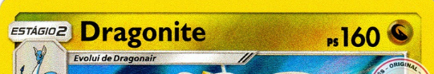
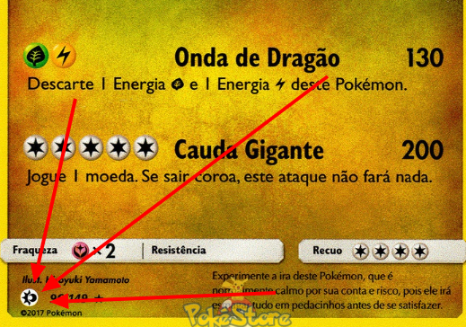
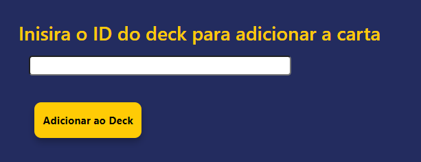

Informações
Bem vindo à My Card Dex!
Nós agradecemos muito a sua escolha de usar a nossa ferramenta de registro de cartas montagens de decks e muito mais!
As informações abaixo irão te auxiliar no uso de nossa ferramenta
Registrando sua primeira carta
Para registrar as cartas é necessário que siga o passo a passo abaixo, caso alguma coisa fuja dos passos mostrados aqui provavelmente a ferramenta não conseguirá encontrar sua carta.
Passo 1: Clique no botão + Adicionar Carta, ele irá abrir um formulário contendo os campos "Nome do Carta", "Tipo da carta", "Estágio do Pokémon", "Tipo do Pokémon", "Raridade" e "Set".
Passo 2: No campo "Nome da Carta" você irá inserir o nome da carta que fica na parte superior dela. Coloque somente o nome do Pokémon, nomeclaturas como EX, GX , level X, V, VMAX, VSTAR, etc você irá informar posteriormente. A ferramenta somente funciona com nomes em inglês, caso seja informado um nome de uma carta que esteja em outra língua a carta não será encontrada.
 Passo 3: O próximo campo é o que vai indicar se sua carta é um Pokémon,
Treinador e Energia. Cada tipo de carta contém suas peculiaridades na procura.
- Pokémons: possuem Tipos e Estágios diversos;
- Treinadores: não possuem Tipos e seus Estágios são:
Item, Apoiador, Ferramenta Pokémon e Estádios ;
- Energias: não possuem Tipos e seus Estágios são limitados
a comum(resposta padrão) e especial;
Passo 4: Definir o Estágio da sua carta, aqui você poderá definir as peculiaridades de suas cartas, recomendamos colocar os estágios especiais aqui ao em vez de colocarem no nome da carta.
Passo 5: Caso sua carta seja um pokémon é necessário informar o tipo dele. Cartas com tipos múltiplos só são reconhecidas pelo primeiro atributo apresentado.
Passo 6: O próximo campo a ser preenchido é das Raridades, aqui estão litadas todas as raridades que ja apareceram durante a vida do jogo de cartas, portanto podem apresentar termos ambíguos como Rara Ultra e Ultra Rara que apontaram para diferentes tipos de carta. Caso não saiba qual grupo sua carta pertence, recomendamos pesquisar em sites de vendas de cartas ou enciclopedias sobre Pokémon TCG.
Passo 7: O último campo é muito importante, para preenche-lo é necessário saber a qual expansão sua carta pertence. Normalmente as expansões estão indicadas no canto inferior direito da sua carta. Caso não saiba o nome da expansão correspondente ao símbulo você pode conferir o nome ou na nossa página inicial na seção de gerações e expansões ou no site a seguir: https://bulbapedia.bulbagarden.net/wiki/List_of_Pokémon_Trading_Card_Game_expansions
Passo 8: Agora é só clicar em procurar e aguardar o resultado!
Registrando seu primeiro deck
Passo 1: Vá na aba Decks, aperte o botão + Adicionar Deck
Passo 2: No formulário informe como vai se chamar o seu deck e o tipo principal
Passo 3: No campo de imagem é necessário colocar um link para a imagem do google. Para isso recomendamos clicar com o botão esquerdo sobre a imagem que você quer. Nas opções que aparecerem procure a opção abrir imagem em nova guia e na nova aba copie o endereço da imagem.
Adicionando cartas aos decks
Passo 1: Clique no botão amarelo na linha da carta que você deseja adicionar ao deck.
Passo 2: Coloque o ID do deck que você deseja adicionar aquela carta
Passo 3: Clique no botão e procure na aba Decks o botão referente ao nome do seu baralho, veja se a carta se encontra na tabela